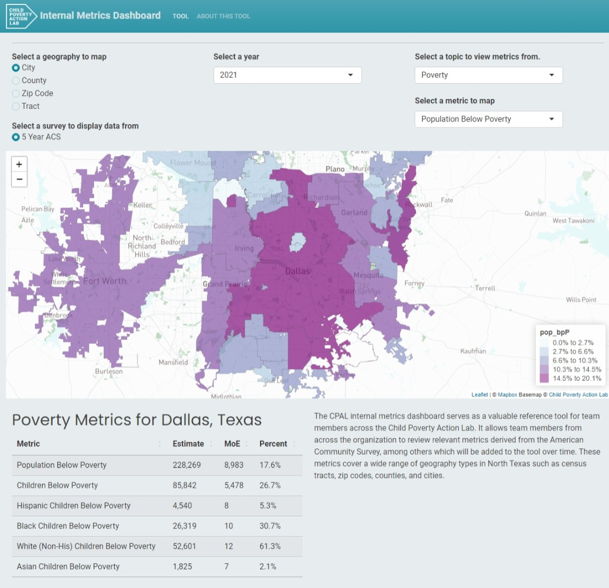

About Our Templates
As part of our data-driven approach to making a positive impact, we rely on the programming language R to drive our work forward. With R at the core of our analytics toolkit, we harness its versatility and extensive library of packages to tackle complex challenges and uncover valuable insights.
As an analytics team, our primary focus is on leveraging R’s capabilities to analyze and visualize data, build statistical models, and develop predictive algorithms. R enables us to efficiently manipulate and transform data, ensuring that we can extract meaningful information and uncover hidden patterns.
Our team fosters a collaborative environment, where we share knowledge, explore innovative approaches, and support one another in leveraging R to its full potential. Through the use of R and its associated packages, we strive to harness the power of data and analytics to drive evidence-based decision-making and make a meaningful difference in the communities we serve.
Static Web Report (Quarto)
A static web report is a tool that enables the creation of dynamic and interactive reports using the Quarto document format. Quarto is a versatile document format that supports the integration of code, text, and visualizations. With Quarto web reports, users can combine narrative content with live code execution, creating reports that can be rendered as HTML web pages.
(This Directory is a Static Web Report!)
Interactive Web Report (Quarto with Shiny)
An interactive web report with Shiny integration combines the interactive features of Shiny dashboards with the flexible document format of Quarto. It allows users to create dynamic reports that incorporate interactive data exploration and visualization using Shiny applications. This integration is particularly useful for enabling users to present complex information in an engaging and interactive manner.
(Adding interactive elements like the graph below!)
Shiny Dashboard (Shiny)
A Shiny dashboard is a web application framework that allows users to create interactive and visually appealing dashboards. It provides a flexible and customizable platform for displaying data, charts, and graphs in real-time, making it easy for users to explore and analyze information. Shiny dashboards are particularly useful as they enable data-driven decision making, data visualization, and data sharing.
(A fully interactive dashboard like the upcoming Internal CPAL Dashboard below!)

Iterated Fact Sheets (Quarto)
An iterative fact sheet is a dynamic report that can be automatically regenerated to cater to different topics or geographical regions while maintaining a consistent overall structure. While the core subject remains the same, the frame of reference, such as the geography or specific topic, can be customized. This allows for the generation of tailored fact sheets that provide relevant information specific to different regions or topics while retaining a standardized format.
(Automatically generated reports we can make across different neighborhoods!)